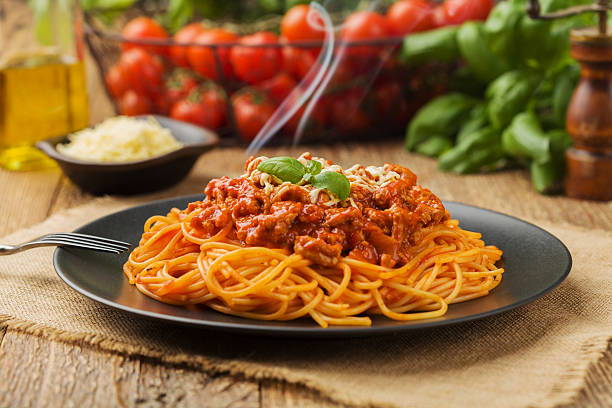

Spaghetti Bolognese

Spaghetti Bolognese, is a classic Italian dish that features a rich and savory meat sauce served over cooked pasta.
The key components of a traditional Bolognese sauce include ground meat, onions, garlic, carrots, celery, tomatoes
Ingredients
- 1 lb ground beef
- 1 onion, finely chopped
- 2 cloves garlic, minced
- 1 carrot, grated
- 1 celery stalk, finely chopped
- 1 can (28 oz) crushed tomatoes
- 1/2 cup red wine (optional)
- 2 tbsp tomato paste
- 1 tsp dried oregano
- 1 tsp dried basil
- Salt and pepper to taste
- 1 lb spaghetti
- Parmesan cheese for garnish
Steps
- Sautéing Aromatics: The dish typically starts by sautéing onions and garlic in olive oil until they become fragrant.
- Adding Vegetables: Finely chopped carrots and celery are often added to the mix, contributing sweetness and depth of flavor.
- Browning the Meat: Ground beef and pork are then added and cooked until browned. The browning process enhances the flavor of the meat and adds richness to the sauce.
- Incorporating Tomatoes: Crushed tomatoes or tomato paste is introduced, providing the base for the sauce. The tomatoes bring acidity and a vibrant color to the dish.
- Simmering: The sauce is allowed to simmer for an extended period, allowing the flavors to meld and intensify. This slow cooking process is crucial for developing the characteristic depth of a Bolognese sauce.
- Seasoning: Seasonings such as dried oregano, basil, salt, and pepper are added to enhance the taste of the sauce.
- Serving with Pasta: The finished Bolognese sauce is ladled over cooked pasta, traditionally spaghetti. The pasta absorbs the flavors of the sauce, creating a hearty and satisfying meal.
- Garnishing: Grated Parmesan cheese is often used as a garnish, adding a final layer of richness to the dish.